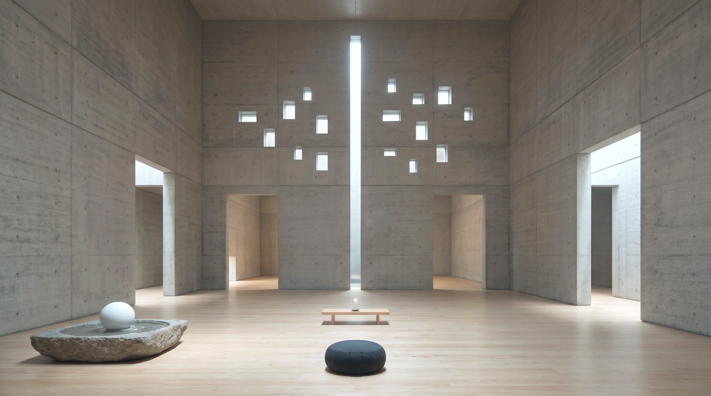

<!doctype html>
<html lang="zh-Hant"><head><meta charset="utf-8">
<meta name="viewport" content="width=device-width,initial-scale=1,viewport-fit=cover">
<title>Addiction</title>
<link rel="manifest" href="manifest.webmanifest"><link rel="apple-touch-icon" href="icons/apple-touch-icon.png?v=1"><link rel="icon" href="icons/icon-192.png"><meta name="apple-mobile-web-app-capable" content="yes"><meta name="apple-mobile-web-app-title" content="信念"><meta name="theme-color" content="#F5F0E6">
<link rel="preconnect" href="https://fonts.googleapis.com"><link rel="preconnect" href="https://fonts.gstatic.com" crossorigin>
<link rel="stylesheet" href="https://fonts.googleapis.com/css2?family=Noto+Serif+TC:wght@500;700&display=swap">
<style>
:root{--bg:#F5F0E6;--card:#FBF8F2;--ink:#3B342C;--muted:#8A7E70;--line:#E5DCCD;--acc:#C9A55A;--soft:#EFE7D8;
  --serif:"Noto Serif TC","Songti TC",serif;--f:"PingFang TC","Noto Sans TC",system-ui,sans-serif}
body.night{--bg:#1E2230;--card:#272C3C;--ink:#ECE6DA;--muted:#A49D93;--line:#3A4053;--acc:#E2C383;--soft:#30364A}
*{box-sizing:border-box;-webkit-tap-highlight-color:transparent}
html,body{margin:0;background:var(--bg);color:var(--ink);font-family:var(--f);line-height:1.65;transition:background .6s,color .6s}
button,input,textarea{font:inherit;color:inherit}button{cursor:pointer}
.wrap{max-width:620px;margin:0 auto;padding:16px 16px calc(40px + env(safe-area-inset-bottom));display:grid;gap:18px}
.top{display:flex;align-items:center;gap:8px}
.top h1{margin:0;font-family:var(--serif);font-size:22px;letter-spacing:.12em;flex:1}
.seg{display:flex;gap:4px;background:var(--soft);border-radius:999px;padding:3px;overflow-x:auto;scrollbar-width:none;max-width:100%}.seg::-webkit-scrollbar{display:none}
.wrap.wide{max-width:1500px}
.visb{order:-2;flex:0 0 100%;max-width:588px;margin:0 auto;aspect-ratio:2.6/1;border-radius:16px;background:#E9E1D3 center 35%/cover no-repeat;display:flex;flex-direction:column;justify-content:flex-end;padding:12px 16px;text-decoration:none;color:#fff;box-shadow:0 10px 26px rgba(60,40,20,.16)}.visb.empty{color:var(--muted);justify-content:center;align-items:center;text-align:center}.visb.empty .vbl:after{content:"（到使命板放一張圖）";display:block;font-size:12px;margin-top:4px}.vbt{font-size:11px;letter-spacing:.2em;opacity:.85}.vbl{font-family:var(--serif);font-size:clamp(15px,3.6vw,19px);margin-top:2px}
.keys{order:-1;flex:0 0 100%;display:flex;gap:6px;overflow-x:auto;scrollbar-width:none;justify-content:center;flex-wrap:wrap;max-width:588px;margin:2px auto 0}.keys::-webkit-scrollbar{display:none}.key{border:1px solid color-mix(in srgb,var(--kc) 45%,transparent);background:color-mix(in srgb,var(--kc) 14%,#FFFCF6);border-radius:12px;padding:6px 10px;cursor:pointer;display:flex;flex-direction:column;align-items:center;min-width:72px;color:#2B2724}.key b{font-size:13px;font-weight:600}.key small{font-size:10.5px;opacity:.7}
.keyov{position:fixed;inset:0;z-index:50;background:var(--kbg);backdrop-filter:blur(18px);-webkit-backdrop-filter:blur(18px);opacity:0;transition:opacity .9s ease;display:grid;place-items:center;cursor:pointer}.keyov.on{opacity:1}.keyin{text-align:center;color:#fff;padding:24px;max-width:520px;text-shadow:0 2px 16px rgba(0,0,0,.25)}.keyn{font-size:15px;letter-spacing:.3em;opacity:.85}.keyl{font-family:var(--serif);font-size:clamp(22px,5.5vw,32px);line-height:1.6;margin:14px 0 30px}.keyb{width:90px;height:90px;margin:0 auto;border-radius:50%;background:rgba(255,255,255,.35);box-shadow:0 0 40px rgba(255,255,255,.5);animation:kbreath 3.3s ease-in-out 3}.keyt{margin-top:18px;font-size:13px;letter-spacing:.2em;opacity:.8}@keyframes kbreath{0%,100%{transform:scale(.6)}50%{transform:scale(1.15)}}
.herow{order:-1;flex:0 0 100%;display:flex;justify-content:center}.hero{position:relative;width:100%;max-width:588px;aspect-ratio:1288/719;border-radius:16px;overflow:hidden;background:#cfc8bd}.hero img{position:absolute;inset:0;width:100%;height:100%;object-fit:cover;user-select:none;-webkit-user-select:none}.hg{position:absolute;transform:translate(-50%,-50%);display:flex;flex-direction:column;align-items:center;gap:3px}.hl{font-size:11px;letter-spacing:.08em;color:#fff;background:rgba(30,26,22,.42);padding:1px 8px;border-radius:999px;white-space:nowrap;backdrop-filter:blur(4px);-webkit-backdrop-filter:blur(4px)}.hl.dim{opacity:.6;font-size:10px}.hbs{display:flex;gap:4px}.hb{border:0;border-radius:999px;padding:5px 11px;font-size:13px;background:rgba(255,252,246,.88);color:#2B2724;box-shadow:0 2px 8px rgba(0,0,0,.18);white-space:nowrap;cursor:pointer}.hb[aria-pressed="true"]{background:#2B2724;color:#FFFCF6}.hb.hall{position:absolute;right:10px;top:10px}@media (max-width:600px){.hb{padding:4px 8px;font-size:11.5px}.hl{font-size:10px}.hg.edge .hbs{flex-direction:column;align-items:center}.hg{gap:2px}}
.ovwrap{overflow-x:auto;-webkit-overflow-scrolling:touch;border:1px solid var(--line,#e6dccd);border-radius:14px;background:var(--card,#fffcf6)}.ov{border-collapse:separate;border-spacing:0;min-width:860px;width:100%;font-size:12.5px;table-layout:fixed}.ov th,.ov td{border-bottom:1px solid #EDE4D6;border-right:1px solid #EDE4D6;padding:8px;vertical-align:top;text-align:left}.ov thead th{background:#F6F0E6;cursor:pointer}.ov thead th b{display:block;font-size:13.5px}.ov small{display:block;color:var(--muted);font-weight:400;font-size:11px;margin-top:2px}.ov .ovh{position:sticky;left:0;z-index:1;background:#F6F0E6;width:84px}.ov td{cursor:pointer}.ov td:hover{background:#FBF6EC}.ovt{line-height:1.55;display:-webkit-box;-webkit-line-clamp:4;-webkit-box-orient:vertical;overflow:hidden}.ovq{display:block;margin-bottom:3px}.ovq:before{content:"・"}.ovm{color:#B5AA9A;font-size:12px}.ovme td{background:#FBF6EC}.ovlay{display:flex;gap:14px;align-items:flex-start}.ovlay .ovwrap{flex:1;min-width:0}.ovside{flex:0 0 340px;position:sticky;top:12px;max-height:calc(100vh - 110px);display:flex;flex-direction:column;background:var(--card,#fffcf6);border:1px solid var(--line,#e6dccd);border-radius:14px;padding:14px 16px;box-shadow:0 6px 20px rgba(60,40,20,.08)}.ovside[hidden]{display:none}.ovsh{display:flex;justify-content:space-between;align-items:center;gap:8px;margin-bottom:8px;font-size:15px}.ovx{border:0;background:none;font-size:22px;line-height:1;color:var(--muted);cursor:pointer;padding:0 4px}.ov td.on{background:#F3E7CF!important;box-shadow:inset 0 0 0 2px #C9A55A}@media (max-width:899px){.ovlay{flex-direction:column}.ovside{flex-basis:auto;width:100%;position:static;max-height:none}}
.ovdlg{overflow-y:auto;font-size:15px;line-height:1.8;flex:1;min-height:0}.ovfull{white-space:pre-line}.ovsec+.ovsec{margin-top:12px}.ovsec label{display:block;font-size:12px;color:var(--muted);margin-bottom:2px}.ovrf{padding:6px 0;border-bottom:1px dashed #E6DCCD}.ovrf b{font-weight:600}.ovw{-webkit-line-clamp:6;white-space:pre-line;font-size:13px}.ov tr:last-child td,.ov tr:last-child th{border-bottom:0}.seg button{white-space:nowrap;flex:none}
.seg button{border:0;background:none;border-radius:999px;padding:6px 14px;font-size:13.5px;color:var(--muted)}
.seg button[aria-pressed="true"]{background:var(--card);color:var(--ink);box-shadow:0 1px 4px rgba(0,0,0,.12)}
.card{background:var(--card);border:1px solid var(--line);border-radius:18px;padding:16px;display:grid;gap:10px}
.stepn{font-size:12px;letter-spacing:.22em;color:var(--acc)}
.decl{font-family:var(--serif);font-size:clamp(18px,4.6vw,22px);line-height:1.85;white-space:pre-line}
.muted{color:var(--muted)}
.bgrid{display:grid;grid-template-columns:1fr 1fr;gap:12px}.bcard{display:grid;gap:6px;align-content:start;background:var(--card);border:1px solid var(--line);border-radius:18px;padding:16px;color:var(--ink);text-decoration:none;min-height:150px}.bcard:active{transform:scale(.98)}
.bgrid.all{grid-template-columns:repeat(auto-fit,minmax(min(100%,420px),1fr));align-items:start}.bgrid>*{min-width:0}.wrap>*{min-width:0}
.bhead{display:flex;justify-content:space-between;align-items:flex-start;gap:10px}
.blinks{display:flex;gap:12px;font-size:13px;white-space:nowrap}
.fld{display:grid;gap:4px}.fld label{font-size:12px;color:var(--muted)}
.bfull textarea{min-height:0;resize:none;overflow:hidden;line-height:1.7;background:transparent;border-color:transparent;padding:6px 8px;margin:0 -8px;width:calc(100% + 16px);font-size:15px}
.bfull textarea:hover{border-color:var(--line)}.bfull textarea:focus{border-color:var(--acc);background:var(--bg);outline:none}
.rf{display:grid;grid-template-columns:1fr auto 1fr;gap:6px;align-items:center}.rf span{color:var(--muted)}.rf input{padding:7px 10px;font-size:13px}
.svd{color:var(--acc);font-weight:700}
.top{flex-wrap:wrap;row-gap:8px}.top h1{white-space:nowrap}@media (max-width:480px){.seg button{padding:6px 10px;font-size:13px}}.bq{font-family:var(--serif);font-size:16px;line-height:1.6}
.refr{display:grid;gap:6px}.rf{display:grid;gap:2px;padding:8px 10px;border-radius:10px;background:var(--soft)}.rf s{color:var(--muted);font-size:13px}.rf span{font-size:14.5px}
.link{color:var(--acc);text-decoration:none;font-size:13px}
.rtag{display:inline-block;margin:-2px 0 4px 10px;font-size:11.5px;color:var(--acc);text-decoration:none;cursor:pointer}
.roots{display:grid;gap:10px}.root{border:1px solid var(--line);border-radius:14px;background:var(--card);padding:0;scroll-margin-top:16px}.root>summary{list-style:none;cursor:pointer;padding:12px 14px;display:grid;gap:2px}.root>summary::-webkit-details-marker{display:none}
.root .rn{font-size:12px;letter-spacing:.12em;color:var(--acc)}.root .rh{font-weight:700;font-size:15.5px}.root .ru{font-size:12.5px;color:var(--muted)}.root .rb{padding:0 14px 14px;display:grid;gap:10px}
.root .rfix{font-family:var(--serif);font-size:16px;line-height:1.7}.root .rdo{font-size:13.5px;background:var(--soft);border-radius:10px;padding:8px 10px}.root ul{margin:0;padding-left:0;list-style:none;display:grid;gap:4px}.root li{font-size:13.5px}.root li a{color:inherit;text-decoration:none;cursor:pointer}.root li b{font-size:11.5px;color:var(--muted);font-weight:400;margin-right:6px}
.root.hit{border-color:var(--acc)}
.root textarea.rfix{resize:none;overflow:hidden;min-height:0;background:transparent;border-color:transparent;padding:6px 8px;margin:0 -8px;width:calc(100% + 16px)}.root textarea.rfix:focus{border-color:var(--acc);background:var(--bg);outline:none}
.btn{border:1px solid var(--line);background:var(--card);border-radius:999px;padding:8px 16px;font-size:14px}
.btn.pri{background:var(--ink);color:var(--bg);border-color:var(--ink)}
.btn.sm{padding:4px 12px;font-size:13px}
.row{display:flex;gap:8px;flex-wrap:wrap;align-items:center}
input[type=text],textarea{width:100%;border:1px solid var(--line);border-radius:12px;padding:10px 12px;background:var(--bg)}
textarea{min-height:90px;resize:vertical}
.focus{display:grid;gap:6px}.focus div{display:flex;gap:8px;align-items:center;font-size:15px}.focus i{width:9px;height:9px;border-radius:3px;flex:none}
.chips{display:flex;gap:6px;flex-wrap:wrap}.chips button{border:1px solid var(--line);background:var(--soft);border-radius:999px;padding:4px 12px;font-size:13px}
.chips button[aria-pressed="true"]{background:var(--acc);border-color:var(--acc);color:#2A241C}
.poses{display:grid;grid-template-columns:repeat(3,minmax(0,1fr));gap:8px}
.pose{border:1px solid var(--line);border-radius:14px;padding:10px 6px;text-align:center;display:grid;gap:4px;justify-items:center;background:var(--bg);position:relative}
.pose svg{width:64px;height:48px}.pose b{font-size:14px}.pose small{font-size:11.5px;color:var(--muted)}
.pose.now{border-color:var(--acc);box-shadow:0 0 0 2px var(--acc)}.pose.done{opacity:.55}.pose.done::after{content:"✓";position:absolute;top:6px;right:9px;color:var(--acc);font-weight:700}
.timer{font-variant-numeric:tabular-nums;font-size:28px;font-family:var(--serif);text-align:center}
.orb{width:110px;height:110px;margin:6px auto;border-radius:50%;background:radial-gradient(circle at 40% 35%,#FFF6E4,#E8D3AE 70%);transform:scale(.6);box-shadow:0 10px 40px rgba(201,165,90,.3)}
.orb.in{transition:transform 4s ease-in-out;transform:scale(1)}.orb.out{transition:transform 6s ease-in-out;transform:scale(.6)}
.bellbox{display:flex;flex-direction:column;align-items:center;gap:2px;margin:-4px 0 -6px}
.bellbox button{border:0;background:none;padding:0;cursor:pointer}
.bellbox img{height:96px;display:block;transform-origin:50% 0;filter:drop-shadow(0 8px 12px rgba(120,80,20,.2))}
.bellbox img.sw{animation:bsw 2.4s ease-out}
.bellbox span{font-size:12.5px}
@keyframes bsw{0%{transform:rotate(0)}10%{transform:rotate(14deg)}25%{transform:rotate(-11deg)}40%{transform:rotate(8deg)}55%{transform:rotate(-5deg)}70%{transform:rotate(3deg)}85%{transform:rotate(-1.5deg)}100%{transform:rotate(0)}}
@media (prefers-reduced-motion:reduce){.bellbox img.sw{animation:none}}
.done-msg{text-align:center;font-family:var(--serif);font-size:20px;padding:20px 0}
.foot{display:flex;justify-content:center}
.link{background:none;border:0;color:var(--muted);text-decoration:underline;text-underline-offset:3px;font-size:13px}
.dlg{position:fixed;inset:0;background:rgba(20,18,15,.4);display:grid;place-items:end center;z-index:20;padding:12px}
@media (min-width:640px){.dlg{place-items:center}}
.dlg[hidden]{display:none}.dlg .box{width:100%;max-width:460px;max-height:88vh;overflow:auto}
.dlg h3{margin:0;font-size:17px}
.field{display:grid;gap:4px;font-size:13px;color:var(--muted)}
@media (prefers-reduced-motion:reduce){.orb.in,.orb.out{transition-duration:.01s}}
.wins{list-style:none;margin:0;padding:0;display:grid;gap:3px;font-size:14px}.wins .muted{font-size:12px}
.whoami{display:grid;gap:6px;background:var(--soft);border-radius:12px;padding:8px 12px}.whoami summary{cursor:pointer;font-size:13px;color:var(--muted);list-style:none}.whoami summary::-webkit-details-marker{display:none}.whoami .decl{font-size:15px;line-height:1.8}
.office{position:relative;border-radius:14px;overflow:hidden;line-height:0}.office img{width:100%;height:auto;display:block}
.opin{position:absolute;transform:translate(-50%,-50%);width:36px;height:36px;border-radius:50%;border:2px solid #fff;background:rgba(59,52,44,.72);color:#fff;font:600 14px/1 var(--f);display:grid;place-items:center;cursor:pointer;box-shadow:0 2px 8px rgba(0,0,0,.35);padding:0}
.opin::after{content:"";position:absolute;inset:-6px;border-radius:50%;border:2px solid rgba(255,255,255,.7);animation:opp 2.4s ease-out infinite}
.opin.on{background:var(--acc)}.opin.on::after{display:none}
@keyframes opp{0%{transform:scale(.8);opacity:1}100%{transform:scale(1.5);opacity:0}}
.whybox{border-bottom:1px solid var(--line);padding-bottom:12px;margin:6px 0 4px;display:grid;gap:8px}.whybox,.whybox>*,.whyroot,.whytbl{min-width:0}.bfull>*{min-width:0}
.whyroot summary{cursor:pointer;font-size:13px;color:var(--muted);list-style:none}.whyroot summary::-webkit-details-marker{display:none}
.whytbl{overflow-x:auto;margin-top:6px}.whytbl table{width:100%;border-collapse:collapse;font-size:12.5px}.whytbl th,.whytbl td{padding:7px 6px;border-top:1px solid var(--line);text-align:left;vertical-align:top}.whytbl th{font-weight:500;color:var(--muted);border-top:0}.whytbl small{color:var(--muted);font-size:11.5px}
.scchips{display:flex;flex-wrap:wrap;gap:6px}.scchip{border:1px solid var(--line);background:transparent;border-radius:999px;padding:7px 12px;font:inherit;font-size:13px;color:inherit;cursor:pointer}.scchip[aria-pressed="true"]{background:var(--acc);border-color:var(--acc);color:#fff}.scchip.add{border-style:dashed;opacity:.75}
.scard{border:1px solid var(--line);border-radius:14px;padding:14px;display:grid;gap:12px;margin-top:6px}
.scsit{font:inherit;font-weight:700;font-size:16px;border:0;background:transparent;color:inherit;padding:0;width:100%}
.scrow{display:grid;gap:4px}.scrow span{font-size:12px;opacity:.65}.scrow textarea{font:inherit;border:0;background:transparent;color:inherit;resize:none;padding:0;width:100%;line-height:1.7}
.scrow.big textarea{font-family:var(--serif);font-size:19px;line-height:1.7}
.scdel{justify-self:end;font-size:12px}
.scene{border:1px dashed var(--line);border-radius:12px;padding:14px;text-align:center;font-size:13px;color:var(--muted)}
.scriptbar{display:flex;justify-content:space-between;align-items:center;gap:8px;flex-wrap:wrap}
.layers{position:sticky;top:44px;z-index:6;background:var(--bg,#F4EFE6);padding:8px 0 6px;margin:-8px 0 0;font-size:13px;letter-spacing:.06em;color:var(--acc,#B08D57);font-weight:600}.flowln{margin-top:3px;font-size:12px;color:var(--acc,#B08D57)}
</style>
<script src="../sync/origina-sync.js" data-app="bedside" data-folder="Bedside" data-keys="origina.bedside.v1,origina.prayer.v1" data-pos="br" data-offset="16"></script>
</head><body>
<main class="wrap" id="app"></main>
<div class="dlg" id="dlg" hidden><div class="box card" role="dialog" aria-modal="true" id="dlgBox"></div></div>
<script>
"use strict";
const KEY="origina.bedside.v1",PKEY="origina.prayer.v1";
const DEF_M="今天是新的一天。\n我不被外界的聲音帶走，我的身體柔軟、放鬆。\n我用聲音帶路，我允許自己被愛、也好好愛自己，我穩穩地累積豐盛。\n我先把心情照顧好，好事就會自然進來。";
const DEF_N="今天的我已經夠好了。\n我放下今天，把明天交出去。";
const ls=(k,v)=>{try{if(v===undefined)return JSON.parse(localStorage.getItem(k)||"null");localStorage.setItem(k,JSON.stringify(v));}catch(e){return null;}};
let B=ls(KEY)||{morning:DEF_M,night:DEF_N,log:[]};const save=()=>ls(KEY,B);
// 我是誰（四頁共用）＋各頁正念文案：音檔＝我是誰＋這一頁的文案，存在床邊自己的資料，跟著 OneDrive 同步
const SCR=k=>((B.script||{})[k]||"");
const audioText=k=>[String(B.whoami||"").trim(),SCR(k).trim()].filter(Boolean).join("\n\n");
const aMins=k=>{const n=audioText(k).replace(/\s/g,"").length;return n?Math.max(1,Math.round(n/240)):0;};
function setScript(k,v){B.script=B.script||{};B.script[k]=v;save();}
const CATHAY_TPL={"note": "國泰是橋，不是終點。\n今天只服務真正需要的人。", "why": "我現在還在國泰，是因為它幫我撐住金庫，Teresa 的舞台也還在這裡。\n我不是要在這裡待一輩子，而是在走向下一條路之前，把這一段走得乾淨、對得起每一位客人。", "become": ["只賣客人真正需要的東西的人", "承諾範圍小、但每一個都守得住的人", "離開時把每位客人好好交接、有始有終的人"], "doing": ["先不增員", "只賣客人真正需要的", "每位客人都留好紀錄，隨時可以交接", "每個月看一次國泰以外的收入進度"], "reframes": [{"q": "收入要靠國泰，我好抗拒", "a": "國泰是過渡期的橋，不是終點。國泰以外的月收入連續 3～6 個月超過 20 萬，我就離開。"}, {"q": "保險是做人的事業，我說服不了自己", "a": "客人要的不是我一輩子，是那張保單對。保單是跟國泰簽的，我離開後公司會轉給其他業務服務，保障不會消失。我要負責的是：賣給他的東西是他真的需要的。"}, {"q": "我怕虎頭蛇尾，客人和被我增員的人能接受嗎", "a": "先不增員，只服務客人，承諾範圍小、守得住。從第一天就知道會走，照「不增員、只賣需要的、離開前好好交接」做，就不叫虎頭蛇尾，叫有始有終。"}], "exit": "出口條件：國泰以外的月收入連續 3～6 個月超過 20 萬，就離開國泰。\n路線：晏任行銷＋自媒體，有機會到每月 10 萬；再來一到兩個業主（或談到更高價），國泰以外就能到 20 萬。\n晏任是最好的作品：把成果整理成案例，拿去談下一個業主。\n幫別人做的同時經營自己的，作品和名聲一起疊上去，就是我的複利。\n進度看「富偉金庫配置表」的收入來源分頁和離開國泰進度條：https://claude.ai/artifact/NGdhdiLxVad3QuibdfhRXA", "ask": "我抗拒的比較像哪一個？工作內容本身／被綁住沒自由／那裡的人或氣氛／跟想走的路不一樣、怕走偏。\n「我先做一年，這一年只服務真正需要的人。如果要離開，我會把每位客人好好交接。」像不像我會說的話？我的版本："};
const CATHAY_SCRIPT="國泰是一座橋。我走在橋上，知道對岸在哪裡。\n我不用說服自己愛上這份工作，我只要對眼前這位客人誠實：他真的需要，我才賣。\n我不帶別人的人生跟著我轉。我的承諾小小的，但每一個都守得住。\n有一天我會走。走的時候，我會把每一位客人好好交到下一個人手上。\n這不是虎頭蛇尾，這是有始有終。";
// Cathay 信念頁：沒有自己的 App，資料存在床邊自己這裡（跟著 OneDrive 同步）；第一次打開先放一份草稿，之後直接改
const CATHAY_SCENES=[{"s": "早會看到白板", "t": "好嫉妒，同齡的都年收兩百萬。我幹嘛不在這裡努力就好？", "a": "白板上的數字，是他們用整個人生換來的。我不換。\n我羨慕的是錢，不是那條路。", "do": "腳掌踩穩地板（足底三腳架），吸一口氣，在心裡說：我不是在國泰贏，我是在我的人生贏。"}, {"s": "早會切斷我的早上", "t": "我的時間又被拿走了。", "a": "早會是過橋的過路費，我只付規定的那一份：人到、準時走。", "do": "早會一結束，先做 10 分鐘自己的事，再開始國泰的工作。"}, {"s": "課程、聽別人講業績和增員", "t": "乾我屁事，我幹嘛要聽？", "a": "不是我的事，我可以人在心不在。", "do": "打開自己的筆記，寫下今天想做的一件自己的事。"}, {"s": "同事約吃飯、旅行", "t": "連休息都還在聊國泰，我真的不行。", "a": "我的生活是我的，我可以說不。唱歌我才去。", "do": "回一句：「這次我先不去，下次唱歌找我！」"}, {"s": "這個月還沒業績", "t": "最低考核撐不過去怎麼辦，我不敢想。", "a": "我只守一條線：每月 8P。\n不用想全部，只想下一個人。", "do": "寫下一個這週可以聯絡的人，就好。"}, {"s": "想到收入要靠國泰", "t": "我好抗拒，怎麼又是國泰。", "a": "國泰是橋，不是終點。國泰以外的收入連續 3～6 個月超過 20 萬，我就走。", "do": "打開金庫配置表，看一眼離開國泰的進度條。"}, {"s": "怕虎頭蛇尾、對不起客人", "t": "我走了，客人怎麼辦？", "a": "客人要的是那張保單對，不是我一輩子。只賣需要的、好好交接，就是有始有終。", "do": "把這位客人的紀錄補完整，隨時可以交接。"}];
let scIdx=0;
// 辦公室圖上的圓點：[左%, 上%, 字]，依序對應前七個情境
const OFFICE_PINS=[[8,30,"板"],[23,24,"時"],[41,31,"課"],[62,63,"飯"],[41,77,"業"],[85,37,"橋"],[89,62,"客"]];
const CATHAY_P2={note:"我給國泰說好的時間，它給我錢；其他的，都是我的。\n我只守一條線：過最低考核（每月 8P），留在 Teresa 的舞台上。多出來的，都是驚喜。",rf:[{"q": "早會切斷我的時間", "a": "早會是過橋的過路費，我只付規定的那一份：人到、準時走。我的時間、我的生活、我的注意力，是我的。"}, {"q": "看到白板很嫉妒，想說幹嘛不在這裡努力就好", "a": "白板上的數字，是他們用整個人生換來的。我不換。我羨慕的是錢，不是那條路；錢，我會從自己的路上拿到。國泰給我底線，我的時間給我自己。我不是在國泰贏，我是在我的人生贏。"}]};
function cathay(){if(!B.cathay){B.cathay=JSON.parse(JSON.stringify(CATHAY_TPL));B.script=B.script||{};if(!B.script.cathay)B.script.cathay=CATHAY_SCRIPT;save();}
  const C=B.cathay;if(!C.p2){   // 10/18 補：一句話換成底線版、卡住時加兩組；自己改過的「一句話」不蓋掉，改接在後面
    const old0=CATHAY_TPL.note;C.note=(!C.note||C.note===old0)?CATHAY_P2.note:(C.note.includes("其他的，都是我的")?C.note:C.note+"\n\n"+CATHAY_P2.note);
    C.reframes=C.reframes||[];CATHAY_P2.rf.forEach(r=>{if(!C.reframes.some(x=>x.q===r.q))C.reframes.push(JSON.parse(JSON.stringify(r)));});C.p2=1;save();}
  if(!C.scenes){C.scenes=JSON.parse(JSON.stringify(CATHAY_SCENES));save();}
  if(!C.p3){   // 10/18 補：借火（不只早會，很多時候都有）
    const sc=(C.scenes||[]).find(x=>x.s==="早會看到白板");if(sc&&!(sc.a||"").includes("借火"))sc.a=(sc.a?sc.a+"\n":"")+"大家狂熱起來的時候（早會、課程、活動都會有），那是免費的柴火。我借火，不借方向。";
    if(sc&&!(sc.do||"").includes("熱"))sc.do=(sc.do?sc.do+"\n":"")+"大家很嗨的時候，深呼吸，把那股熱接過來，想一件今天要為自己燒的事。";
    C.reframes=C.reframes||[];if(!C.reframes.some(x=>x.q==="大家很狂熱的時候（早會、課程、活動）"))C.reframes.push({"q": "大家很狂熱的時候（早會、課程、活動）", "a": "借火：他們在喊、在拍手、在衝，那股熱度是真的。我把它當成演唱會台下的歡呼，接過來，點在自己身上。　不借方向：他們燒的是國泰的業績，我燒的是自己的東西：唱歌、晏任、自媒體。熱度拿走，目標留給他們。　不多花時間：我守的是時間、生活和注意力。借火不用多留一分鐘，只是坐在那裡的時候，把聽到的能量換個去處。"});C.p3=1;save();}
    if(!C.p4){const L="生命會給我無限的資源，讓我享受生活、音樂。\n國泰是讓我休息，不是讓我努力的地方。";if(!String(C.note||"").includes("讓我休息"))C.note=L+(C.note?"\n\n"+C.note:"");C.p4=1;save();}   // 10/18 晚：主體在前，國泰在後   // 10/18：情境卡，發生的時候點對應的那張
  return C;}
function sceneHTML(){const S=cathay().scenes;const i=Math.max(0,Math.min(scIdx,S.length-1)),x=S[i]||{};
  const extra=S.map((y,j)=>[y,j]).filter(([y,j])=>j>=OFFICE_PINS.length);
  return `<div class="fld"><label>發生什麼事？點辦公室裡對應的東西</label>
    <div class="office">
      ${OFFICE_PINS.map(([x,y,t],j)=>S[j]?`<button class="opin${j===i?" on":""}" data-sc="${j}" style="left:${x}%;top:${y}%" aria-label="${esc(S[j].s)}"><span>${t}</span></button>`:"").join("")}</div>
    <div class="scchips" style="margin-top:8px">${extra.map(([y,j])=>`<button class="scchip" data-sc="${j}" aria-pressed="${j===i}">${esc(y.s||"（未命名）")}</button>`).join("")}<button class="scchip add" data-scadd>＋ 情境</button></div></div>
    ${S.length?`<div class="scard" data-i="${i}">
      <input class="scsit" data-scf="s" value="${esc(x.s||"")}" placeholder="情境">
      <div class="scrow"><span>腦中冒出來的話</span><textarea data-scf="t" rows="1" placeholder="那時候我會想……">${esc(x.t||"")}</textarea></div>
      <div class="scrow big"><span>穩住我的話</span><textarea data-scf="a" rows="1" placeholder="對自己說……">${esc(x.a||"")}</textarea></div>
      <div class="scrow"><span>一個動作</span><textarea data-scf="do" rows="1" placeholder="馬上可以做的一件小事">${esc(x.do||"")}</textarea></div>
      <button class="link scdel" data-scdel>刪掉這個情境</button></div>`:""}`;}
function wireScenes(said){const grow=t=>{t.style.height="auto";t.style.height=(t.scrollHeight+2)+"px";};
  document.querySelectorAll("[data-sc]").forEach(b=>b.onclick=()=>{scIdx=+b.dataset.sc;render();});
  const add=$("[data-scadd]");if(add)add.onclick=()=>{const S=cathay().scenes;S.push({s:"",t:"",a:"",do:""});scIdx=S.length-1;save();render();const e=$(".scsit");if(e)e.focus();};
  const del=$("[data-scdel]");if(del)del.onclick=()=>{if(del.dataset.ok!=="1"){del.dataset.ok="1";del.textContent="再按一次確定刪除";return;}const S=cathay().scenes;S.splice(scIdx,1);scIdx=0;save();render();};
  document.querySelectorAll(".scard [data-scf]").forEach(t=>{if(t.tagName==="TEXTAREA")grow(t);t.oninput=()=>{if(t.tagName==="TEXTAREA")grow(t);const S=cathay().scenes,i=+t.closest(".scard").dataset.i;S[i][t.dataset.scf]=t.value;save();if(t.dataset.scf==="s"){const c=document.querySelector(`[data-sc="${i}"]`);if(c)c.textContent=t.value||"（未命名）";}said&&said();};});}
const YOGA="shortcuts://run-shortcut?name="+encodeURIComponent("開瑜珈");
const topHTML=k=>`<details class="whoami"><summary>我是誰（每頁共用，點開看）${B.whoami?"":"・還沒寫"}</summary>${B.whoami?`<div class="decl">${esc(B.whoami)}</div>`:""}<a class="link" href="#me">到「我是誰」修改 →</a></details>
    ${k==="cathay"||k==="money"?"":`<div class="scene">情境圖（之後放）</div>`}
    <div class="fld"><div class="scriptbar"><label>正念文案・接在我是誰後面${aMins(k)?"（整段音檔約 "+aMins(k)+" 分鐘）":""}</label><button class="btn sm" data-copy="${k}">複製正念文案</button></div><textarea data-script="${k}" rows="1" placeholder="這一頁專屬的話，會接在我是誰後面一起唸">${esc(SCR(k))}</textarea></div>`;
function wireTop(said){const grow=t=>{t.style.height="auto";t.style.height=(t.scrollHeight+2)+"px";};
  document.querySelectorAll("[data-script]").forEach(t=>{grow(t);t.oninput=()=>{grow(t);setScript(t.dataset.script,t.value);said&&said();};});
  document.querySelectorAll("[data-copy]").forEach(b=>b.onclick=()=>copyText(SCR(b.dataset.copy),b));}
async function copyText(t,btn){let ok=false;try{await navigator.clipboard.writeText(t);ok=true;}catch(e){const a=document.createElement("textarea");a.value=t;document.body.appendChild(a);a.select();try{ok=document.execCommand("copy");}catch(_){}a.remove();}
  if(btn){const o=btn.textContent;btn.textContent=ok?"已複製 ✓":"複製失敗，請手動選取";setTimeout(()=>{btn.textContent=o;},1600);}}
const $=s=>document.querySelector(s);
const esc=s=>String(s==null?"":s).replace(/[&<>"']/g,c=>({"&":"&amp;","<":"&lt;",">":"&gt;",'"':"&quot;","'":"&#39;"}[c]));
const pad=n=>String(n).padStart(2,"0"),ymd=d=>`${d.getFullYear()}-${pad(d.getMonth()+1)}-${pad(d.getDate())}`;
const dayOff=n=>{const d=new Date();d.setDate(d.getDate()+n);return d;};
const weekKeyOf=d=>{const x=new Date(d);x.setDate(x.getDate()-((x.getDay()+6)%7));return ymd(x);};
let mode=(()=>{const hs=(location.hash||"").slice(1);if(["me","morning","night","hh","vocal","cathay","media","money","all"].includes(hs))return hs;const h=new Date().getHours();return h>=4&&h<15?"morning":"night";})();
const READ=new URLSearchParams(location.search).has("read");   // ?read：只顯示那段話（給鬧鐘捷徑用）
addEventListener("hashchange",()=>{const hs=location.hash.slice(1);if(["me","morning","night","hh","vocal","cathay","media","money","all"].includes(hs)){mode=hs;render();}});
/* 全部信念：在這一頁就能看完、改完。同一個網站、同一台裝置的資料，改了直接寫回原本那一頁（HH、Vocal 打開時看到的就是這裡改的） */
const BASE="https://fuwei0618-cmd.github.io";
const HKEY="origina.hh.v1",VKEY="busk-app-v1";
const rd=k=>{try{return JSON.parse(localStorage.getItem(k)||"null");}catch(e){return null;}};
const HH_NOTE="帶著猶豫去也算數。\n今天的目標只有一個：人到教室。\n跳得好不好，是以後的事。";
// 改了別頁的資料，也替那一頁標記「待同步」，下次打開它就會上傳到 OneDrive
const dirtyFor=app=>{try{const k="origina-sync-meta:"+app,m=JSON.parse(localStorage.getItem(k)||"{}");m.dirty=true;m.localAt=Date.now();localStorage.setItem(k,JSON.stringify(m));}catch(e){}};
const FLOW={morning:"敲鈴、對自己說 → 今天的重點 → 一次深呼吸 → 開始今天",night:"今天做到的一件事 → 躺著伸展 → 明天的重點 → 敲鈴、說晚安"};
const VOCAL_TPL={"note": "你不用準備好才出發。今天只要唱完一首，就算贏。唱完回來，在罐子裡放一顆。", "why": "唱歌的時候，我不用解釋自己是誰。聲音一出來，我就覺得自己在發光，也想讓聽的人亮一下。", "at80": "80 歲的我還在唱。週末在公園或老宅的院子裡，唱給老朋友和路過的人聽，唱到大家跟著哼。", "become": ["上台時敢看著觀眾的眼睛", "有三首拿手歌，隨時可以唱", "每個月錄一首，聽得到自己的進步"], "reframes": [{"q": "我年紀太大了，唱到老會很丟臉", "a": "鄧麗君、江蕙都唱了很久，觀眾聽的是故事，不是年紀。80 歲還在唱的人不丟臉，是讓人羨慕。聲音會老，但會多出年輕時唱不出來的東西。"}, {"q": "別人會覺得我不務正業、像個戲子", "a": "我的正業有在做，唱歌是我照顧自己的方式。「戲子」是把故事帶給別人的人，這是很古老、很珍貴的工作。"}, {"q": "別人會覺得我唱得難聽", "a": "不是每個人都要喜歡。街上停下來聽的那一個人，就是我今天唱給他的。"}, {"q": "我是不是真的唱得難聽", "a": "錄音就是證據：跟三個月前的自己比，不跟別人比。難聽的地方是還沒練到，不是不能練。"}, {"q": "我的表演精神不夠到位", "a": "表演精神是練出來的，不是天生的。每一次上台看著一個人的眼睛唱完，就多長一點。"}, {"q": "鐵肺歌后都去賣房子了，我還做什麼夢", "a": "她不唱，不代表唱歌不值得；她要的是靠唱歌養活自己。我不用靠唱歌賺錢才算數，我唱，是因為我想唱。"}, {"q": "最後歌沒唱好，人生也沒過好", "a": "我沒有把人生押在唱歌上：工作照做、金庫照存。唱歌是讓我過得好的一部分，不是賭注。"}]};
// Vocal 願景還是空的：直接套用 Vocal 頁的範本（跟 HH 一樣先有一份可以改的內容），存回 Vocal 並同步
function vocalSeed(){const d=rd(VKEY)||{};d.meta=d.meta||{};const v=d.meta.vision=d.meta.vision||{};let ch=false;["note","why","at80"].forEach(k=>{if(!String(v[k]||"").trim()){v[k]=VOCAL_TPL[k];ch=true;}});if(!(v.become||[]).some(x=>String(x||"").trim())){v.become=VOCAL_TPL.become.slice();ch=true;}if(!(v.reframes||[]).some(r=>(r.q||"").trim()||(r.a||"").trim())){v.reframes=JSON.parse(JSON.stringify(VOCAL_TPL.reframes));ch=true;}if(ch){localStorage.setItem(VKEY,JSON.stringify(d));dirtyFor("vocal");clearTimeout(upT.vocal);upT.vocal=setTimeout(()=>pushOther("vocal"),1500);}}
const WHY={"vocal": {"line": "音樂是我和世界之間最短的路：不用翻譯，感受直接變成聲音。", "cmp": "用聲音的方式", "cols": ["寫字", "說話", "唱歌"], "rows": [["直接", "從感受到被聽見，要轉幾道", "3 道", "3 道", "1 道"], ["不用想", "要先想好怎麼說嗎", "要", "要", "不用，歌詞旋律都準備好了"], ["不用應對", "要一邊應對別人嗎", "不用", "要", "不用"], ["無國界", "聽不懂語言也會被打動嗎", "✗", "✗", "✓"], ["跨距離", "不用面對面也傳得到嗎", "✓ 但沒聲音", "要看影片", "✓ 街頭、公園、舞台"], ["情緒寬", "能裝多深多亂的情緒", "偏理性", "偏理性", "可以哭也可以狂歡"], ["身體", "身體有沒有參與", "✗", "少", "✓ 從核心到全身"], ["心流", "會進入心流嗎", "有時", "很少", "最容易"]], "note": "第一列「直接」是原因，下面七個關鍵字都是它帶來的結果。所以說音樂「最無腦」：不是最淺，是最直接。"}, "media": {"line": "自媒體是我不用在場，也能一直被找到的地方。", "cmp": "被看見的方式", "cols": ["社交・應酬", "現場表演・比賽", "自媒體"], "rows": [["一直在", "做一次之後，還會一直被看見嗎", "✗ 散場就沒了", "✗ 唱完就沒了", "✓ 一直在網路上"], ["不用到場", "要本人在場嗎", "要", "要", "不用"], ["被找到", "是我去找人，還是人來找我", "我去找", "剛好路過的人", "鐵粉自己找上門"], ["節奏自己定", "什麼時候做、做多少，誰決定", "別人", "主辦方", "我"], ["本來就在做", "需要另外花力氣嗎", "要", "要準備", "不太用，生活本來就在記錄"], ["會累積", "做越多，會越來越輕鬆嗎", "✗", "慢慢", "✓ 作品和名聲一起疊上去"], ["能變現", "能帶來收入嗎", "間接", "偶爾", "✓ 也是接案的作品集"]], "note": "第一列「一直在」是原因：做一次，就一直被看見。下面六個都是它帶來的結果。音樂是「發出聲音」，自媒體是「讓聲音留下來」。"}};
// 根本原因：一句話＋一張「關鍵字｜比的是什麼」的表（跟 Vocal 願景、WonderMedia「我」同一份內容）
const whyHTML=k=>{const W=WHY[k];if(!W)return "";return `<div class="whybox"><div class="fld"><label>${k==="media"?"為什麼做自媒體":"根本原因・為什麼是音樂"}</label><div class="decl" style="font-size:18px">${esc(W.line)}</div></div>
  <details class="whyroot" ${k==="media"?"open":""}><summary>根本原因的表 ▾</summary><div class="whytbl"><table><thead><tr><th>關鍵字<br><small>比的是：${esc(W.cmp)}</small></th>${W.cols.map(c=>`<th>${esc(c)}</th>`).join("")}</tr></thead><tbody>${W.rows.map(r=>`<tr><td><b>${esc(r[0])}</b><br><small>${esc(r[1])}</small></td><td>${esc(r[2])}</td><td>${esc(r[3])}</td><td><b>${esc(r[4])}</b></td></tr>`).join("")}</tbody></table></div><p class="muted" style="margin:6px 0 0;font-size:12.5px">${esc(W.note)}</p></details></div>`;};
const MEDIA_RF=[{"q": "我沒有固定主題，不知道要拍什麼", "a": "我的主題就是我的生活。記錄本來就在做，先丟進源頭再說。"}, {"q": "拍了也沒人看", "a": "自媒體會一直在。今天沒人看，不代表以後沒人找到；鐵粉是慢慢找上門的。"}, {"q": "我剪得不夠好、不夠專業", "a": "我以前剪的有可愛感，那是我的味道。不用跟別人一樣專業，要像我。"}, {"q": "我又虎頭蛇尾，更新不下去", "a": "節奏我自己定。停了不是失敗，隨時可以再丟一支。"}, {"q": "我不夠好看、不夠有趣，憑什麼被看", "a": "會找到我的人，就是喜歡我這個樣子的人。我不用討好所有人。"}, {"q": "我好沒自信", "a": "自信是做出來的，不是想出來的。今天只要丟一則到源頭就好。"}];
const MEDIA_RF2=[{"q": "我怕酸民", "a": "酸民罵的是他滑過的那幾秒，不是我。會留下來的是鐵粉，不是路人。"}, {"q": "真的被罵了怎麼辦", "a": "先不回，隔天再看。刪留言、封鎖都可以，我不用跟每個人解釋，也不用讓每個人喜歡。"}];
// 宇宙印鈔機（10/19）：投資的信念頁。沒有自己的資料檔，存在床邊這裡（跟著 OneDrive 同步）；靈感來自「宇宙當中飄著大把沒人要的錢」
const MONEY_TPL={"note":"宇宙裡飄著大把沒人要的錢，我只要伸手接。\n發願歸發願，下單照紀律。","why":"我投資，不是為了變成有錢人，是為了買回時間和自由：不用再為了錢把自己撐滿，可以唱歌、種花、做菜、帶爸媽去旅行、養自己的狗。\n錢是我的地基（Chiara・富偉）。地基穩了，聲音才出得去。","become":["錢像水一樣流進來，也守得住的人","照紀律下單，不跟著心情買賣的人","每個月固定存、固定投，像呼吸一樣自然的人"],"doing":["打開實戰頁先看燈號：今天不用動，就不動","每個月先存再花","買之前寫一句理由，賣之前也寫一句","只用閒錢，照部位上限"],
 "reframes":[{"q":"跌了好慌，想全部賣掉","a":"跌是市場在呼吸，不是我做錯。先看我寫的理由：理由還在就不動；理由不在了，照規則賣，不是照心情賣。"},{"q":"看到別人賺很多，我是不是太慢","a":"別人的錢是別人的速度。宇宙裡沒人要的錢很多，不會被別人拿光。我要的是一直留在場上，不是一次贏最多。"},{"q":"手癢想買","a":"想買的時候先寫一句理由，隔一天再看。理由還站得住，再照部位上限買。"},{"q":"這樣存要存到什麼時候","a":"複利一開始看起來很慢，後面會像水龍頭全開。今天存進去的每一筆，都在幫未來的我買回時間。"},{"q":"我是不是不配有很多錢","a":"錢不挑人，只往流得通的地方去。我把管道打開、照顧好，它就會來。"},{"q":"發了願，錢怎麼還沒來","a":"發願歸發願，下單照紀律。宇宙負責心情，實戰頁負責決定。"}]};
const MONEY_P2={become:["讓錢替我工作，我去唱歌、去生活的人","看得懂自己每一筆錢去哪裡的人","賺賠都平靜，一直留在場上的人"],
 reframes:[{"q":"賺了一點就想全部出場","a":"賣不賣看理由，不看心情。理由還在，就讓它繼續長；真的要落袋，也是照我事先寫好的目標。"},{"q":"錯過一波大漲，好後悔","a":"市場每天都開門，機會不會只有一次。錯過的那一波不是我的錢，接下來照紀律走的才是。"},{"q":"虧了好丟臉，不想跟人說","a":"虧損是學費，不是人格。把它記下來、寫一句學到什麼，就變成我的經驗值。"},{"q":"我是理財顧問，自己卻賠錢","a":"顧問也是在市場裡練出來的。我親身走過的每一步，之後都能更真心地陪客人走。"},{"q":"新聞好恐怖，好像要崩盤了","a":"新聞是賣緊張的。先看實戰頁的燈號和我的持股警報，沒有亮紅燈，就不用跟著新聞跑。"}],
 flow:["打開實戰頁，先看今天的一句話和燈號","燈號沒變、持股沒有警報 → 今天不用動，關掉就好","有警報 → 打開那一檔，看當初寫的理由還在不在","想買：先寫理由、想買的價格、停損點、要放多少；隔一天再看一次","下單只用閒錢，單一檔不超過我自己定的上限","下單後在羅盤記一筆：為什麼買、為什麼賣","每個月固定一天：先存再投，看一次資產配置","每一季回顧：賺的、賠的，各寫一句學到什麼"]};
function moneyB(){if(!B.money){B.money=JSON.parse(JSON.stringify(MONEY_TPL));save();}
  if(!B.money.p2){const M=B.money;M.become=M.become||[];MONEY_P2.become.forEach(x=>{if(!M.become.includes(x))M.become.push(x);});M.reframes=M.reframes||[];MONEY_P2.reframes.forEach(r=>{if(!M.reframes.some(x=>x.q===r.q))M.reframes.push(JSON.parse(JSON.stringify(r)));});if(!(M.flow||[]).length)M.flow=MONEY_P2.flow.slice();M.p2=1;save();}   // 10/19 補：更多信念＋操作流程
  if(String(B.money.why||"").includes("聲音才唱得出去")){B.money.why=B.money.why.replace("聲音才唱得出去","聲音才出得去");save();}return B.money;}
function mediaB(){if(!B.media){B.media={reframes:JSON.parse(JSON.stringify(MEDIA_RF))};save();}
  if(!B.media.p2){MEDIA_RF2.forEach(r=>{if(!B.media.reframes.some(x=>x.q===r.q))B.media.reframes.push(JSON.parse(JSON.stringify(r)));});B.media.p2=1;save();}   // 10/18 補：酸民
  return B.media;}
function beliefs(){
  const Hd=rd(HKEY),Vd=rd(VKEY),H=(Hd&&Hd.vision)||{},V=(Vd&&Vd.meta&&Vd.meta.vision)||{};
  return [
   {k:"morning",name:"起床",when:"每天早上",flow:FLOW.morning,open:"./#morning",listen:"./?read#morning",f:[["main","一句話・對自己說的話",B.morning,"t"]]},
   {k:"night",name:"睡前",when:"每天晚上",flow:FLOW.night,open:"./#night",listen:"./?read#night",f:[["main","一句話・睡前的話",B.night,"t"]]},
   {k:"hh",name:"HH",when:"週三晚上・出發前",open:BASE+"/Gym/hh/#belief",missing:!Hd,app:"HH 頁",
    f:[["note","一句話・出發前的話",H.note||HH_NOTE,"t"],["why","使命・為什麼想學",H.why,"t"],["become","身份・想成為的樣子（一行一個）",(H.become||[]).filter(Boolean).join("\n"),"l"],["wins","行為・小勝利",H.wins||[],"w"],["reframes","卡住時・害怕的時候",H.reframes||[],"r"]]},
   {k:"vocal",name:"Vocal",when:"上台・練唱前",open:BASE+"/Vocal/#vision",missing:false,fresh:!(Vd&&Vd.meta&&Vd.meta.vision),app:"Vocal 頁",
    f:[["note","一句話・上台前的話",V.note,"t"],["why","使命・為什麼唱",V.why,"t"],["at80","身份・80 歲的我",V.at80,"t"],["become","身份・想成為的樣子（一行一個）",(V.become||[]).filter(Boolean).join("\n"),"l"],["wins","行為・小勝利",V.wins||[],"w"],["reframes","卡住時・害怕的時候",V.reframes||[],"r"]]},
   (()=>{const C=cathay();return {k:"cathay",name:"Cathay",when:"上班前・卡住時",open:"",
    f:[["note","一句話・出門前的話",C.note,"t"],["why","使命・為什麼現在在國泰",C.why,"t"],["become","身份・想成為的樣子（一行一個）",(C.become||[]).filter(Boolean).join("\n"),"l"],["doing","行為・我怎麼做（一行一個）",(C.doing||[]).filter(Boolean).join("\n"),"l"],["reframes","卡住時・念頭與轉念",C.reframes||[],"r"],["exit","出口・離開國泰的路",C.exit,"t"],["ask","還沒回答的問題",C.ask,"t"]]};})(),
   {k:"media",name:"WonderMedia",when:"想放棄更新、懷疑要不要做的時候",open:BASE+"/WonderMedia/#me",static:true,f:[["reframes","卡住時・念頭與轉念",mediaB().reframes||[],"r"]]},
   (()=>{const M=moneyB();return {k:"money",name:"宇宙印鈔機",when:"打開投資羅盤前・看盤心慌時",open:"https://investment-beige-iota.vercel.app/desk",
    f:[["note","一句話・打開投資前的話",M.note,"t"],["why","使命・為什麼投資",M.why,"t"],["become","身份・想成為的樣子（一行一個）",(M.become||[]).filter(Boolean).join("\n"),"l"],["doing","行為・我怎麼做（一行一個）",(M.doing||[]).filter(Boolean).join("\n"),"l"],["flow","操作流程・每次打開投資羅盤照這個走（一行一步）",(M.flow||[]).filter(Boolean).join("\n"),"l"],["reframes","卡住時・念頭與轉念",M.reframes||[],"r"]]};})()];}
/* 雲端：HH、Vocal 的信念也直接跟 OneDrive 對齊——打開這頁先抓雲端最新的，改了就直接上傳（跟它們自己那頁用同一個檔案） */
const OTHER={hh:{key:HKEY,file:"hh/data.json",app:"hh"},vocal:{key:VKEY,file:"Vocal/data.json",app:"vocal"}};
const pend={hh:{},vocal:{}},upT={};let pulledOnce=false;
const metaOf=a=>{try{return JSON.parse(localStorage.getItem("origina-sync-meta:"+a)||"{}");}catch(e){return {};}};
const setMeta=(a,m)=>{try{localStorage.setItem("origina-sync-meta:"+a,JSON.stringify(m));}catch(e){}};
async function cloudTok(){try{return window.OriginaSync&&await OriginaSync.getToken();}catch(e){return null;}}
function applyPend(k,d){const P=pend[k];if(!Object.keys(P).length)return d;
  if(k==="hh"){d.vision=Object.assign({type:"vision",why:"",become:["","",""],note:HH_NOTE,reframes:[],wins:[]},d.vision||{},P);}
  else{d.meta=d.meta||{};d.meta.vision=Object.assign(d.meta.vision||{},P);}return d;}
// 本機沒有那一頁的資料時，不管時間戳都直接抓雲端（以前會因為時間戳一樣而跳過，Vocal 才會時有時無）；回到這個分頁時也再抓一次
document.addEventListener("visibilitychange",()=>{if(document.visibilityState==="visible"&&(mode==="all"||mode==="hh"||mode==="vocal"))pullOthers();});
const CS={};
async function pullOthers(){if(!(await cloudTok())){CS.hh=CS.vocal="nolog";if((mode==="all"||mode==="hh"||mode==="vocal")&&!(document.activeElement&&document.activeElement.closest(".bfull")))render();return;}let changed=false;
  for(const k of ["hh","vocal"]){const O=OTHER[k];try{const r=await OriginaSync.api.getJSON(O.file);const m=metaOf(O.app);CS[k]=(r&&r.data&&r.data[O.key])?"ok":"nofile";
    const noLocal=!localStorage.getItem(O.key);if(r&&r.data&&r.data[O.key]&&(noLocal||((r.updatedAt||0)>(m.at||0)&&!(m.dirty&&(m.localAt||0)>(r.updatedAt||0))))){localStorage.setItem(O.key,r.data[O.key]);setMeta(O.app,{...m,at:r.updatedAt,dirty:false,pushedOnce:true});changed=true;}}catch(e){CS[k]="err";}}
  if(!changed&&(mode==="all"||mode==="hh"||mode==="vocal")&&!document.activeElement.closest(".bfull"))render();
  if(changed&&(mode==="all"||mode==="hh"||mode==="vocal")&&!document.activeElement.closest(".bfull"))render();}
async function pushOther(k){const O=OTHER[k];if(!(await cloudTok()))return;   // 沒登入：留著「待同步」，下次打開那一頁時會補傳
  try{const r=await OriginaSync.api.getJSON(O.file),m=metaOf(O.app);
    let d=rd(O.key)||{};if(r&&r.data&&r.data[O.key]&&(r.updatedAt||0)>(m.at||0)){d=applyPend(k,JSON.parse(r.data[O.key]));}   // 雲端有別台裝置的新資料：用雲端那份，再套上這次改的
    const raw=JSON.stringify(d);localStorage.setItem(O.key,raw);const data=r&&r.data?{...r.data,[O.key]:raw}:{[O.key]:raw};
    const now=Date.now();await OriginaSync.api.putJSON(O.file,{app:O.app,updatedAt:now,data});setMeta(O.app,{...metaOf(O.app),at:now,dirty:false,pushedOnce:true});pend[k]={};
    const e=$("#svd");if(e){e.textContent="・已同步到雲端";setTimeout(()=>{if(e.textContent==="・已同步到雲端")e.textContent="";},1800);}}catch(e){}}
function putBelief(k,field,val){
  if(k==="morning"||k==="night"){B[k]=val;save();return;}
  if(k==="cathay"){cathay()[field]=val;save();return;}
  if(k==="media"){mediaB()[field]=val;save();return;}
  if(k==="money"){moneyB()[field]=val;save();return;}
  const key=k==="hh"?HKEY:VKEY,d=rd(key)||(k==="vocal"?{}:null);if(!d)return;
  let v;if(k==="hh"){v=d.vision=Object.assign({type:"vision",why:"",become:["","",""],note:HH_NOTE,reframes:[],wins:[]},d.vision||{});}
  else{d.meta=d.meta||{};v=d.meta.vision=d.meta.vision||{};}
  v[field]=val;pend[k][field]=val;localStorage.setItem(key,JSON.stringify(d));dirtyFor(k==="hh"?"hh":"vocal");clearTimeout(upT[k]);upT[k]=setTimeout(()=>pushOther(k),1500);}
// 10/18：所有卡住時的共同解。各分頁的念頭按「底下真正怕的」分成五種，點標籤回到「我是誰」看共同解
const ROOTS=[{n:"一",h:"怕被看、被評價",u:"底下怕的：別人的眼光會定義我",fix:"會留下來的人，就是喜歡我這個樣子的人。我不用讓每個人喜歡，也不用跟每個人解釋。",do:"現在做：想一個曾經停下來聽我、說喜歡我的人，今天就唱給他、拍給他。"},
{n:"二",h:"我還不夠好",u:"底下怕的：要先夠好，才有資格做",fix:"我不用先夠好才開始，我是開始了才變好。只跟三個月前的自己比，不跟別人比。",do:"現在做：打開一個三個月前的錄音或作品，找一個已經進步的地方。"},
{n:"三",h:"怕白做、怕選錯",u:"底下怕的：投入了卻沒有結果",fix:"我沒有把人生押在這裡：工作照做、金庫照存。做的當下我就在享受，這就不是白做。",do:"現在做：打開金庫看一眼，提醒自己底是穩的。"},
{n:"四",h:"怕撐不久",u:"底下怕的：我又會虎頭蛇尾",fix:"節奏我自己定。停了不是失敗，隨時可以再開始；說好的範圍小一點，就守得住。",do:"現在做：只做今天的一小步：唱一首、丟一則、記一筆，就算贏。"},
{n:"五",h:"被別人的路帶走",u:"底下怕的：我的時間和自由被拿走",fix:"我只付說好的那一份。我的時間、我的生活、我的注意力，是我的。",do:"現在做：結束後先做 10 分鐘自己的事，再回到別人的節奏。"}];
const ROOT_OF={"我年紀太大了，唱到老會很丟臉":0,"別人會覺得我不務正業、像個戲子":0,"別人會覺得我唱得難聽":0,"我跳起來一定很好笑":0,"錄作品好可怕":0,"我不夠好看、不夠有趣，憑什麼被看":0,"我怕酸民":0,"真的被罵了怎麼辦":0,
"我是不是真的唱得難聽":1,"我的表演精神不夠到位":1,"我記不住，會拖累大家":1,"我剪得不夠好、不夠專業":1,"我好沒自信":1,
"鐵肺歌后都去賣房子了，我還做什麼夢":2,"最後歌沒唱好，人生也沒過好":2,"拍了也沒人看":2,"看到白板很嫉妒，想說幹嘛不在這裡努力就好":2,
"我又虎頭蛇尾，更新不下去":3,"我怕虎頭蛇尾，客人和被我增員的人能接受嗎":3,"我沒有固定主題，不知道要拍什麼":3,
"收入要靠國泰，我好抗拒":4,"保險是做人的事業，我說服不了自己":4,"早會切斷我的時間":4,"大家很狂熱的時候（早會、課程、活動）":4,
"跌了好慌，想全部賣掉":2,"看到別人賺很多，我是不是太慢":2,"發了願，錢怎麼還沒來":2,"這樣存要存到什麼時候":3,"我是不是不配有很多錢":1,"錯過一波大漲，好後悔":2,"虧了好丟臉，不想跟人說":0,"我是理財顧問，自己卻賠錢":1,"新聞好恐怖，好像要崩盤了":2};
const rootOf=q=>{q=String(q||"").trim();if(q in ROOT_OF)return ROOT_OF[q];const m=(B.rootTag||{})[q];return m==null?null:m;};
const rtagHTML=q=>{const i=rootOf(q);return i==null?"":`<a class="rtag" data-root="${i}">→ 共同解${ROOTS[i].n}・${ROOTS[i].h}</a>`;};
function allRF(){const out=[],add=(k,name,arr)=>(arr||[]).forEach(r=>{if(String(r.q||"").trim())out.push({k,name,q:r.q.trim()});});
  try{const h=rd(HKEY);add("hh","HH",h&&h.vision&&h.vision.reframes);}catch(e){}
  try{const v=rd(VKEY);add("vocal","Vocal",v&&v.meta&&v.meta.vision&&v.meta.vision.reframes);}catch(e){}
  try{add("media","WonderMedia",mediaB().reframes);}catch(e){}try{add("cathay","Cathay",cathay().reframes);}catch(e){}try{add("money","宇宙印鈔機",moneyB().reframes);}catch(e){}return out;}
function rootsHTML(){const all=allRF(),fx=B.rootFix||{};const none=all.filter(r=>rootOf(r.q)==null);
  return `<h2 style="font-size:16px;margin:18px 0 4px">卡住時的共同解</h2><p class="muted" style="margin:0 0 8px;font-size:13px">每一頁卡住的念頭，底下其實只有五種怕。不管在哪一頁卡住，先回來這裡。</p><div class="roots">${ROOTS.map((R,i)=>{const L=all.filter(r=>rootOf(r.q)===i);return `<details class="root" id="root-${i}"><summary><span class="rn">共同問題${R.n}・${L.length} 句</span><span class="rh">${R.h}</span><span class="ru">${R.u}</span></summary><div class="rb"><div class="fld"><label>共同解</label><textarea class="rfix" data-rfix="${i}" rows="1">${esc(fx[i]!=null?fx[i]:R.fix)}</textarea></div><div class="rdo">${esc(R.do)}</div><div class="fld"><label>各頁冒出來的樣子（點一下回到那一頁）</label><ul>${L.map(r=>`<li><a data-go="${r.k}"><b>${r.name}</b>${esc(r.q)}</a></li>`).join("")||`<li class="muted">還沒有</li>`}</ul></div></div></details>`;}).join("")}
  ${none.length?`<details class="root" id="root-x"><summary><span class="rn">還沒分類・${none.length} 句</span><span class="rh">你新寫的念頭</span><span class="ru">選一種怕，它就會連到那一個共同解</span></summary><div class="rb"><ul>${none.map(r=>`<li style="display:grid;gap:4px"><a data-go="${r.k}"><b>${r.name}</b>${esc(r.q)}</a><select data-rsel="${esc(r.q)}" style="font-size:13px;padding:4px 8px;border:1px solid var(--line);border-radius:8px;background:var(--bg);color:var(--ink)"><option value="">選一種怕…</option>${ROOTS.map((R,i)=>`<option value="${i}">${R.n}・${R.h}</option>`).join("")}</select></li>`).join("")}</ul></div></details>`:""}</div>`;}
function gotoRoot(i){mode="me";history.replaceState(null,"","#me");stopPose();render();const d=document.getElementById("root-"+i);if(d){d.open=true;d.classList.add("hit");setTimeout(()=>d.scrollIntoView({behavior:"smooth",block:"start"}),60);setTimeout(()=>d.classList.remove("hit"),2200);growAll();}}
function growAll(){document.querySelectorAll("[data-rfix]").forEach(t=>{t.style.height="auto";t.style.height=(t.scrollHeight+2)+"px";});}
function wireRoots(){document.querySelectorAll("[data-rfix]").forEach(t=>{t.oninput=()=>{B.rootFix=B.rootFix||{};B.rootFix[t.dataset.rfix]=t.value;save();t.style.height="auto";t.style.height=(t.scrollHeight+2)+"px";};});
  document.querySelectorAll(".root").forEach(d=>d.addEventListener("toggle",growAll));
  document.querySelectorAll("[data-go]").forEach(a=>a.onclick=()=>{mode=a.dataset.go;history.replaceState(null,"","#"+mode);stopPose();render();scrollTo(0,0);});
  document.querySelectorAll("[data-rsel]").forEach(sel=>sel.onchange=()=>{if(sel.value==="")return;B.rootTag=B.rootTag||{};B.rootTag[sel.dataset.rsel]=+sel.value;save();gotoRoot(+sel.value);});}
function wireTags(){document.querySelectorAll("[data-root]").forEach(a=>a.onclick=()=>gotoRoot(+a.dataset.root));}
function allHTML(only){
  if(!only||only==="vocal"){const Vd0=rd(VKEY);if(!(Vd0&&Vd0.meta&&Vd0.meta.vision&&String(Vd0.meta.vision.why||"").trim())&&CS.vocal&&CS.vocal!=="err")vocalSeed();}
  const mins=b=>{const n=b.f.filter(x=>x[3]!=="w").map(x=>x[3]==="r"?x[2].map(r=>(r.q||"")+(r.a||"")).join(""):String(x[2]||"")).join("").replace(/\s/g,"").length;return n?Math.max(1,Math.round(n/240)):0;};   // 大約一分鐘唸 240 字
  return `<div class="top"><h1>我的信念</h1>${segHTML()}</div>${only?"":`<p style="margin:-4px 0 0;font-size:13px"><a class="link" href="https://fuwei0618-cmd.github.io/Entry/mission/#me" target="_top">迷路時看結構：我是誰 ↗</a></p>`}
  <p class="muted" style="margin:-4px 0 0;font-size:13px">${only?"直接點字修改，會自動存好。":"每一篇都在這裡，直接點字修改，會自動存回原本那一頁。"}<span id="svd" class="svd"></span></p>
  <div class="bgrid all">${beliefs().filter(b=>!only||b.k===only).map(b=>`<section class="card bfull" data-b="${b.k}">
    <div class="bhead"><div><div class="stepn">${esc(b.name)}</div><div class="muted" style="font-size:12px">${esc(b.when)}${mins(b)?"・約 "+mins(b)+" 分鐘":""}</div>${b.flow?`<div class="flowln">儀式：${esc(b.flow)}</div>`:""}</div>
      <span class="blinks">${b.listen?`<a class="link" href="${b.listen}">純文字</a>`:""}${b.open?`<a class="link" href="${b.open}" ${b.open.startsWith("http")?'target="_top"':''}>原頁 ↗</a>`:""}</span></div>
    ${b.k==="cathay"?b.f.filter(x=>x[0]==="note").map(([fk,label,val,type])=>`<div class="fld"><label>${esc(label)}</label><textarea data-fk="${fk}" data-type="${type}" rows="1" placeholder="還沒寫">${esc(val||"")}</textarea></div>`).join("")+sceneHTML():""}
    ${b.k==="vocal"?whyHTML("vocal"):""}
    ${b.static?"":topHTML(b.k)}
    ${b.static?whyHTML(b.k):`<p class="layers" style="position:static;margin:4px 0 0">一句話 → 使命 → 身份 → 行為 → 卡住時</p>`}
    ${b.missing?`<p class="muted" style="margin:0;font-size:13px">${({nolog:`這台裝置還沒登入 OneDrive。按右下角雲朵登入，就會自動抓下來。`,nofile:`OneDrive 裡還沒有${esc(b.app)}的資料。請打開${esc(b.app)}，按它右下角的雲朵登入一次，它會把資料傳上去；之後這裡就讀得到。`,err:`抓雲端資料時出錯了，等一下再回來看看。`})[CS[b.k]]||`正在找${esc(b.app)}的資料……`}　<a class="link" href="${b.open}" target="_top">打開${esc(b.app)}</a></p>`:
    b.f.filter(x=>!(b.k==="cathay"&&x[0]==="note")).map(([fk,label,val,type])=>type==="w"?`<div class="fld"><label>${esc(label)}</label>${val.length?`<ul class="wins">${val.slice(-5).reverse().map(w=>`<li><span class="muted">${esc(w.d||"")}</span> ${esc(w.t||"")}</li>`).join("")}</ul>${val.length>5?`<p class="muted" style="margin:2px 0 0;font-size:12px">共 ${val.length} 個，最近 5 個；在原頁加</p>`:""}`:`<p class="muted" style="margin:0;font-size:13px">還沒有，在原頁加</p>`}</div>`:type==="r"?`<div class="fld"><label>${esc(label)}</label>${val.map((r,i)=>`<div class="rf"><input type="text" data-rq="${i}" data-fk="${fk}" value="${esc(r.q||"")}" placeholder="我怕……"><span>→</span><input type="text" data-ra="${i}" data-fk="${fk}" value="${esc(r.a||"")}" placeholder="我告訴自己……"></div>${rtagHTML(r.q)}`).join("")}<button class="link" data-rfadd="${fk}">＋ 再加一個</button></div>`
      :`<div class="fld"><label>${esc(label)}</label><textarea data-fk="${fk}" data-type="${type}" rows="1" placeholder="還沒寫">${esc(val||"")}</textarea></div>`).join("")}
  </section>`).join("")}</div>`;}
/* 10/24：「全部」改成表格總覽（像三個我的類型×方位）：橫的是每一頁，直的是一句話→使命→身份→行為→卡住時；點格子進那一頁 */
let OVFULL={};
function overviewHTML(){
  const ROWS=[["一句話","出發前唸的"],["使命","我相信什麼"],["身份","我想成為誰"],["行為","我每天怎麼做"],["卡住時","念頭與轉念"]];
  const layerOf=l=>{const h=l.split("・")[0];return h==="操作流程"?"行為":h;};
  const cut=(t,n)=>{t=String(t||"").replace(/\s+/g," ").trim();return t.length>n?t.slice(0,n)+"…":t;};
  const cell=(b,row)=>{if(b.missing)return `<span class="ovm">還沒載入</span>`;const F=b.f.filter(x=>layerOf(x[1])===row);if(!F.length)return `<span class="ovm">·</span>`;
    return F.map(([fk,label,val,type])=>{if(type==="r"){const L=(val||[]).filter(r=>r.q||r.a);return L.length?`<div class="ovt">${L.slice(0,3).map(r=>`<span class="ovq">${esc(cut(r.q,18))}</span>`).join("")}${L.length>3?`<span class="ovm">共 ${L.length} 則</span>`:""}</div>`:`<span class="ovm">還沒寫</span>`;}
      if(type==="w"){return (val||[]).length?`<span class="ovm">${val.length} 個小勝利</span>`:`<span class="ovm">還沒有</span>`;}
      const v=String(val||"").trim();return v?`<div class="ovt">${esc(cut(v,type==="l"?60:54))}</div>`:`<span class="ovm">還沒寫</span>`;}).join("");};
  const BS=beliefs(),B0=B;OVFULL={};const pre=t=>`<div class="ovfull">${esc(String(t||"").trim())}</div>`;
  const full=(b,row)=>{const F=b.f.filter(x=>layerOf(x[1])===row);return F.map(([fk,label,val,type])=>{let h;if(type==="r"){const L=(val||[]).filter(r=>r.q||r.a);h=L.length?L.map(r=>`<div class="ovrf"><b>${esc(r.q||"")}</b><div>${esc(r.a||"")}</div></div>`).join(""):"";}else if(type==="w"){h=(val||[]).length?`<ul class="wins">${val.slice().reverse().map(w=>`<li><span class="muted">${esc(w.d||"")}</span> ${esc(w.t||"")}</li>`).join("")}</ul>`:"";}else h=String(val||"").trim()?pre(val):"";return h?`<div class="ovsec">${F.length>1?`<label>${esc(label)}</label>`:""}${h}</div>`:"";}).join("")||`<p class="muted">還沒寫</p>`;};const cell2=(b,r)=>{const h=cell(b,r);return /^(<span class="ovm">還沒(寫|有)<\/span>)+$/.test(h)?`<span class="ovm">還沒寫</span>`:h;};
  return `<div class="top"><h1>我的信念</h1>${segHTML()}</div>
  <p class="muted" style="margin:-4px 0 0;font-size:13px">一眼看全部。點格子看全文；點最上面的頁名，直接打開那一頁。</p>
  <div class="ovlay"><div class="ovwrap"><table class="ov"><thead><tr><th class="ovh"></th>${BS.map(b=>`<th data-ov="${b.k}"><b>${esc(b.name)}</b><small>${esc(b.when)}</small></th>`).join("")}</tr></thead>
  <tbody><tr class="ovme"><th class="ovh" data-ov="me"><b>我是誰</b><small>每一頁都從這段開始</small></th><td colspan="${BS.length}" data-ov="me" data-row="我是誰">${String(B0.whoami||"").trim()?`<div class="ovt ovw">${esc(String(B0.whoami).trim())}</div>`:`<span class="ovm">還沒寫</span>`}</td></tr>
  <tr><th class="ovh"><b>正念文案</b><small>接在我是誰後面</small></th>${BS.map(b=>{const t=SCR(b.k).trim();OVFULL[b.k+"|正念文案"]=t?pre(t):`<p class="muted">還沒寫</p>`;return `<td data-ov="${b.k}" data-row="正念文案">${t?`<div class="ovt">${esc(cut(t,60))}</div>`:`<span class="ovm">還沒寫</span>`}</td>`;}).join("")}</tr>
  ${ROWS.map(([r,q])=>`<tr><th class="ovh"><b>${r}</b><small>${q}</small></th>${BS.map(b=>{OVFULL[b.k+"|"+r]=b.missing?`<p class="muted">還沒載入</p>`:full(b,r);return `<td data-ov="${b.k}" data-row="${r}">${cell2(b,r)}</td>`;}).join("")}</tr>`).join("")}</tbody></table></div><aside class="ovside" id="ovside" hidden></aside></div>`;}
function wireAll(){
  const grow=t=>{t.style.height="auto";t.style.height=(t.scrollHeight+2)+"px";};
  let tm=0;const said=()=>{const e=$("#svd");if(!e)return;e.textContent="・已存";clearTimeout(tm);tm=setTimeout(()=>{e.textContent="";},1400);};
  wireTop(said);wireScenes(said);
  document.querySelectorAll(".bfull textarea:not([data-script]):not([data-scf])").forEach(t=>{grow(t);t.oninput=()=>{grow(t);const k=t.closest("[data-b]").dataset.b;putBelief(k,t.dataset.fk,t.dataset.type==="l"?t.value.split("\n").map(x=>x.trim()).filter(Boolean):t.value);said();};});
  const rfs=k=>{if(k==="cathay")return JSON.parse(JSON.stringify(cathay().reframes||[]));if(k==="media")return JSON.parse(JSON.stringify(mediaB().reframes||[]));if(k==="money")return JSON.parse(JSON.stringify(moneyB().reframes||[]));const d=rd(k==="hh"?HKEY:VKEY);const v=k==="hh"?(d&&d.vision):(d&&d.meta&&d.meta.vision);return JSON.parse(JSON.stringify((v&&v.reframes)||[]));};
  document.querySelectorAll(".bfull .rf input").forEach(t=>t.oninput=()=>{const k=t.closest("[data-b]").dataset.b,R=rfs(k),i=+(t.dataset.rq??t.dataset.ra);R[i]=R[i]||{q:"",a:""};if(t.dataset.rq!=null)R[i].q=t.value;else R[i].a=t.value;putBelief(k,"reframes",R);said();});
  document.querySelectorAll("[data-rfadd]").forEach(b=>b.onclick=()=>{const k=b.closest("[data-b]").dataset.b,R=rfs(k);R.push({q:"",a:""});putBelief(k,"reframes",R);render();});}
/* 10/25：信念頁最上面放禱告房前殿的擬真圖，按鈕放在對應的位置（跪下＝起床・睡前、光＝我是誰＋舞台、月老殿＝HH、財神殿＝金庫） */
const HERO=[{x:50,y:22,t:"中間的光・聲音領路",b:[["me","我是誰"]]},{x:50,y:57,t:"月老殿・Sánchez",b:[["hh","HH"]]},{x:84,y:50,e:1,t:"財神殿・金庫",b:[["cathay","Cathay"],["money","宇宙印鈔機"]]},{x:20,y:52,e:1,t:"媽祖殿・Shakira",b:[["vocal","Vocal"],["media","WonderMedia"]]},{x:50,y:84,t:"跪下",b:[["morning","起床"],["night","睡前"]]}];
const heroHTML=()=>`<div class="herow"><div class="hero">${HERO.map(h=>`<div class="hg${h.e?" edge":""}" style="left:${h.x}%;top:${h.y}%"><span class="hl">${h.t}</span>${h.b.length?`<span class="hbs">${h.b.map(([m,n])=>`<button class="hb" data-m="${m}" aria-pressed="${mode===m}">${n}</button>`).join("")}</span>`:`<span class="hl dim">還沒有</span>`}</div>`).join("")}<button class="hb hall" data-m="all" aria-pressed="${mode==="all"}">全部</button></div></div>`;
/* 10/25：一鍵插卡（心理開關，不記錄）：按下去整個畫面染上那張卡的顏色、浮出一句話、跟著呼吸三次，大約十秒後退回 */
const KEYS=[["柔軟","瑜伽","#8FBFC6","我絕對柔軟，絕對鬆弛。"],["性感","HH","#E39AB1","我是女神。我走進房間，所有目光都在我身上。"],["舞台","Vocal","#E0785C","這個舞台是我的。我不帶歌，讓歌帶我。"],["信仰","Origina","#C9A55A","我是自己的絕對信仰。"],["狠","Voldemort","#2F4A3A","我知道我要什麼，我毫不客氣地拿。"],["放","AncientOne","#B9B0A2","放下自我，力量自己上來。"],["開心","全部插上","linear-gradient(135deg,#8FBFC6,#E39AB1,#E0785C,#C9A55A)","我絕對享受人生。"]];
const keysHTML=()=>`<div class="keys">${KEYS.map(([n,sub,c],i)=>`<button class="key" data-key="${i}" style="--kc:${c.startsWith("linear")?"#C9A55A":c};${c.startsWith("linear")?`background:${c};color:#fff`:""}"><b>一鍵${n}</b><small>${sub}</small></button>`).join("")}</div>`;
function playKey(i){const [n,sub,c,line]=KEYS[i];const o=document.createElement("div");o.className="keyov";o.style.setProperty("--kbg",c.startsWith("linear")?c:`radial-gradient(circle at 50% 45%,${c}f2,${c}e0 60%,${c}cc)`);
  o.innerHTML=`<div class="keyin"><div class="keyn">一鍵${n}</div><div class="keyl">${esc(line)}</div><div class="keyb"></div><div class="keyt">吸氣……吐氣……</div></div>`;document.body.appendChild(o);navigator.vibrate&&navigator.vibrate(20);
  requestAnimationFrame(()=>o.classList.add("on"));const done=()=>{if(!o.isConnected)return;o.classList.remove("on");setTimeout(()=>o.remove(),900);};o.onclick=done;setTimeout(done,10500);}
document.addEventListener("click",e=>{const k=e.target.closest("[data-key]");if(k)playKey(+k.dataset.key);});
/* 10/26：每個分頁最上面都掛終極幻境（同一張圖：使命板放的，存在這台裝置的 origina-mission 資料庫／自己的 OneDrive），扁扁一條，不搶禱告房 */
const visionHTML=()=>{let line="被愛著、穿得很美，在一個新的地方。";try{const M=JSON.parse(localStorage.getItem("origina.mission.v1")||"{}");if(M.visionLine)line=M.visionLine;}catch(e){}
  return `<a class="visb" id="visb" href="../mission/#me" title="在使命板換圖"><span class="vbt">Addiction・終極幻境</span><span class="vbl">${esc(line)}</span></a>`;};
let visURL=null;
async function loadVisB(){const el=document.getElementById("visb");if(!el)return;let b=null;
  try{b=await new Promise((res)=>{const r=indexedDB.open("origina-mission",1);r.onupgradeneeded=()=>r.result.createObjectStore("rec");r.onerror=()=>res(null);r.onsuccess=()=>{try{const q=r.result.transaction("rec").objectStore("rec").get("vision-img");q.onsuccess=()=>res(q.result||null);q.onerror=()=>res(null);}catch(e){res(null);}};});}catch(e){}
  if(!b){try{if(window.OriginaSync&&await OriginaSync.getToken())b=await OriginaSync.api.getBlob("Mission/vision.jpg");}catch(e){}}
  if(!b){el.classList.add("empty");return;}if(visURL)URL.revokeObjectURL(visURL);visURL=URL.createObjectURL(b);el.style.backgroundImage=`linear-gradient(to top,rgba(20,14,10,.62),rgba(20,14,10,0) 60%),url(${visURL})`;}
const segHTML=()=>visionHTML()+heroHTML()+keysHTML()+`<div class="seg"><button data-m="me" aria-pressed="${mode==="me"}">我是誰</button><button data-m="morning" aria-pressed="${mode==="morning"}">起床</button><button data-m="night" aria-pressed="${mode==="night"}">睡前</button><button data-m="hh" aria-pressed="${mode==="hh"}">HH</button><button data-m="vocal" aria-pressed="${mode==="vocal"}">Vocal</button><button data-m="cathay" aria-pressed="${mode==="cathay"}">Cathay</button><button data-m="media" aria-pressed="${mode==="media"}">WonderMedia</button><button data-m="money" aria-pressed="${mode==="money"}">宇宙印鈔機</button><button data-m="all" aria-pressed="${mode==="all"}">全部</button></div>`;
// 從夢想版讀重點（同一個網站，同一台裝置）
function focusFor(d){const D=ls("origina.dream.v1");if(!D||!D.todo)return{tasks:[],days:[]};
  const find=id=>{for(const p of D.todo.projects){const t=p.tasks.find(x=>x.id===id);if(t)return{p,t};}return null;};
  const tasks=(D.todo.week[weekKeyOf(d)]||D.todo.week[weekKeyOf(new Date())]||[]).map(find).filter(x=>x&&!x.t.done);
  const k=ymd(d),days=(D.todo.days||[]).filter(x=>x.date===k);return{tasks,days};}
const POSES=[{n:"抱膝",s:"雙手抱膝，輕輕左右搖",svg:'<path d="M8 38h48" opacity=".35"/><circle cx="22" cy="24" r="5"/><path d="M27 27c6 2 10 0 14-4M41 23c2-6-2-10-6-9M27 30l14 0M41 30c4 0 6-4 4-8"/>'},
 {n:"仰臥扭轉",s:"膝蓋倒向一邊，換邊",svg:'<path d="M6 38h52" opacity=".35"/><circle cx="12" cy="32" r="5"/><path d="M17 33h20M37 33l8-10M45 23l6 8M24 33l-6-10M36 33l8 8"/>'},
 {n:"蝴蝶式",s:"腳掌相對，膝蓋放鬆打開",svg:'<path d="M6 40h52" opacity=".35"/><circle cx="12" cy="34" r="5"/><path d="M17 35h18M35 35l9-11M35 35l9 3M44 24l4 12M44 38l4-2"/>'}];
let pose=-1,poseLeft=0,poseTimer=null,doneToday=null,breathing=false;
function render(){setTimeout(loadVisB,0);$("#app").classList.toggle("wide",mode==="all");
  document.body.classList.toggle("night",mode==="night");
  if(READ&&(mode==="me"||SCR(mode))){const t=mode==="me"?String(B.whoami||""):audioText(mode);$("#app").innerHTML=`<div style="padding:24px 8px"><div class="decl">${esc(t)}</div>${mode==="morning"||mode==="night"?`<div class="row" style="justify-content:center;margin-top:28px"><a class="btn pri" style="text-decoration:none" href="${YOGA}">開始瑜伽 →</a></div>`:""}</div>`;return;}
  if(mode==="me"){$("#app").innerHTML=`<div class="top"><h1>我是誰</h1>${segHTML()}</div><p class="muted" style="margin:-4px 0 0;font-size:13px">每一頁的音檔都從這段開始。改這裡，起床、睡前、HH、Vocal、Cathay 的音檔稿一起變。<span id="svd" class="svd"></span></p>
    <section class="card bfull"><textarea id="whoami" rows="1" placeholder="寫下你的我是誰宣言">${esc(B.whoami||"")}</textarea><div class="row"><button class="btn sm" id="cpme">複製</button></div></section>${rootsHTML()}`;wireRoots();
    const t=$("#whoami"),grow=()=>{t.style.height="auto";t.style.height=(t.scrollHeight+2)+"px";};grow();let tm=0;
    t.oninput=()=>{grow();B.whoami=t.value;save();const e=$("#svd");if(e){e.textContent="・已存";clearTimeout(tm);tm=setTimeout(()=>{e.textContent="";},1400);}};
    $("#cpme").onclick=e=>copyText(String(B.whoami||""),e.target);
    document.querySelectorAll("[data-m]").forEach(b=>b.onclick=()=>{mode=b.dataset.m;history.replaceState(null,"","#"+mode);stopPose();render();});return;}
  if(mode==="all"||mode==="hh"||mode==="vocal"||mode==="cathay"||mode==="media"||mode==="money"){if(mode==="all"){$("#app").innerHTML=overviewHTML();const goOv=k=>{mode=k;history.replaceState(null,"","#"+mode);render();scrollTo(0,0);};OVFULL["me|我是誰"]=String(B.whoami||"").trim()?`<div class="ovfull">${esc(String(B.whoami).trim())}</div>`:`<p class="muted">還沒寫</p>`;
    document.querySelectorAll("[data-ov]").forEach(c=>c.onclick=()=>{const k=c.dataset.ov,r=c.dataset.row;if(!r){goOv(k);return;}const nm=k==="me"?"我是誰":(beliefs().find(b=>b.k===k)||{}).name||"";
      const sd=$("#ovside");document.querySelectorAll(".ov td.on").forEach(x=>x.classList.remove("on"));c.classList.add("on");
      sd.innerHTML=`<div class="ovsh"><b>${esc(nm)}${r!=="我是誰"?"・"+esc(r):""}</b><button class="ovx" data-ovx aria-label="收起">×</button></div><div class="ovdlg">${OVFULL[k+"|"+r]||""}</div><button class="btn pri" data-goov style="margin-top:14px;align-self:flex-start">去這一頁改</button>`;sd.hidden=false;
      sd.querySelector("[data-goov]").onclick=()=>goOv(k);sd.querySelector("[data-ovx]").onclick=()=>{sd.hidden=true;c.classList.remove("on");};
      if(matchMedia("(max-width:899px)").matches)sd.scrollIntoView({behavior:"smooth",block:"nearest"});});}else{$("#app").innerHTML=allHTML(mode);wireAll();wireTags();}{const on=document.querySelector(".seg [aria-pressed=true]");if(on){const g=on.parentElement;g.scrollLeft=on.offsetLeft-(g.clientWidth-on.offsetWidth)/2;}}if(!pulledOnce){pulledOnce=true;setTimeout(pullOthers,800);setTimeout(pullOthers,3500);}document.querySelectorAll("[data-m]").forEach(b=>b.onclick=()=>{mode=b.dataset.m;history.replaceState(null,"","#"+mode);stopPose();render();});return;}
  if(READ){$("#app").innerHTML=`<div style="min-height:80vh;display:grid;place-items:center;text-align:center;padding:24px"><div><div class="stepn" style="margin-bottom:18px">${mode==="morning"?"早安":"晚安"}</div><div class="decl" style="font-size:clamp(22px,6vw,30px)">${esc(mode==="morning"?B.morning:B.night)}</div><a class="link" style="display:inline-block;margin-top:28px" href="./#${mode}">打開${mode==="morning"?"起床":"睡前"}頁 →</a></div></div>`;return;}
  const M=mode==="morning",f=focusFor(M?new Date():dayOff(1)),first=(f.tasks[0]&&f.tasks[0].t.text)||(f.days[0]&&f.days[0].text)||"";
  const focusHTML=(f.tasks.length||f.days.length)?`<div class="focus">${f.days.map(d=>`<div><i style="background:var(--acc)"></i><b>${esc(d.text)}</b></div>`).join("")}${f.tasks.map(x=>`<div><i style="background:${x.p.color}"></i>${esc(x.t.text)}<span class="muted" style="font-size:12px">・${esc(x.p.name)}</span></div>`).join("")}</div>`:`<p class="muted" style="margin:0;font-size:14px">${M?"今天":"明天"}沒有排重點，就照自己的步調。</p>`;
  const tonight=(B.log||[]).find(l=>l.date===ymd(new Date())&&l.type===(M?"morning":"night"));
  $("#app").innerHTML=`<div class="top"><h1>${M?"早安":"晚安"}</h1>${segHTML()}</div><p class="layers">${M?FLOW.morning:FLOW.night}</p>
  <section class="card bfull" data-b="${mode}">${topHTML(mode)}<div class="row" style="justify-content:center"><a class="btn pri" style="text-decoration:none" href="${YOGA}">聽完了，開始瑜伽 →</a></div></section>
  ${M?`
  <section class="card"><div class="stepn">一・對自己說</div><div class="bellbox"><button id="ring" aria-label="敲一下鈴"></button><span class="muted">${M?"先敲一下鈴，再對自己說":"敲一下鈴，把今天收起來"}</span></div><div class="decl">${esc(B.morning)}</div></section>
  <section class="card"><div class="stepn">二・今天的重點</div>${focusHTML}</section>
  <section class="card"><div class="stepn">三・一次深呼吸</div><div class="orb" id="orb"></div><div class="row" style="justify-content:center"><button class="btn" id="breathe">${breathing?"吸氣…":"開始"}</button></div></section>
  <div class="row" style="justify-content:center"><button class="btn pri" id="finish">${tonight?"今天已經開始了 ✓":"開始今天"}</button></div>`
  :`
  <section class="card"><div class="stepn">一・今天做到的一件事</div>
    ${focusFor(new Date()).tasks.length?`<div class="chips">${focusFor(new Date()).tasks.map(x=>`<button data-did="${esc(x.t.text)}" aria-pressed="${doneToday===x.t.text}">${esc(x.t.text)}</button>`).join("")}</div>`:""}
    <input type="text" id="did" placeholder="小事也算，例如：有喝水、有練唱十分鐘" value="${esc(doneToday||"")}"></section>
  <section class="card"><div class="stepn">二・躺著伸展（每個 30 秒）</div>
    <div class="poses">${POSES.map((p,i)=>`<div class="pose${pose===i?" now":""}${pose>i||pose===3?" done":""}"><svg viewBox="0 0 64 48" fill="none" stroke="currentColor" stroke-width="2.4" stroke-linecap="round" stroke-linejoin="round">${p.svg}</svg><b>${p.n}</b><small>${p.s}</small></div>`).join("")}</div>
    ${pose>=0&&pose<3?`<div class="timer" id="tm">${poseLeft}</div>`:""}
    <div class="row" style="justify-content:center"><button class="btn" id="stretch">${pose<0?"開始伸展":pose===3?"再做一次":"跳過這個"}</button></div></section>
  <section class="card"><div class="stepn">三・明天的重點</div>${focusHTML}</section>
  <section class="card"><div class="stepn">四・睡前</div><div class="bellbox"><button id="ring" aria-label="敲一下鈴"></button><span class="muted">${M?"先敲一下鈴，再對自己說":"敲一下鈴，把今天收起來"}</span></div><div class="decl">${esc(B.night)}${first?`\n願明天的「${esc(first)}」順利。`:""}</div></section>
  <div class="row" style="justify-content:center"><button class="btn pri" id="finish">${tonight?"已經說過晚安了 ✓":"晚安"}</button></div>`}
  <div class="foot row" style="justify-content:center"><button class="link" id="pray">記一筆禱告</button><button class="link" id="editDecl">改寫${M?"起床":"睡前"}的話</button></div>`;
  document.querySelectorAll("[data-m]").forEach(b=>b.onclick=()=>{mode=b.dataset.m;history.replaceState(null,"","#"+mode);stopPose();render();});
  document.querySelectorAll("[data-did]").forEach(b=>b.onclick=()=>{doneToday=b.dataset.did;render();});
  const di=$("#did");if(di)di.oninput=()=>{doneToday=di.value;};
  const st=$("#stretch");if(st)st.onclick=()=>{if(pose<0||pose===3){pose=0;runPose();}else{nextPose();}};
  const br=$("#breathe");if(br)br.onclick=breathe;
  $("#finish").onclick=()=>{B.log=(B.log||[]).filter(l=>!(l.date===ymd(new Date())&&l.type===mode));B.log.push({date:ymd(new Date()),type:mode,did:mode==="night"?(doneToday||""):undefined,at:new Date().toTimeString().slice(0,5)});B.log=B.log.slice(-400);save();
    $("#app").innerHTML=`<div class="done-msg">${mode==="morning"?"去過好今天吧 ☀︎":"晚安，今天辛苦了 ☾"}</div><div class="row" style="justify-content:center"><button class="btn" id="back">回到${mode==="morning"?"起床":"睡前"}頁</button></div>`;$("#back").onclick=render;};
  wireTop();
  $("#ring").onclick=ring;
  $("#pray").onclick=prayDialog;$("#editDecl").onclick=declDialog;}
let actx=null,abuf=null;
async function ring(){const b=$("#ring img");b.classList.remove("sw");void b.offsetWidth;b.classList.add("sw");navigator.vibrate&&navigator.vibrate(20);
  try{actx=actx||new (window.AudioContext||window.webkitAudioContext)();if(actx.state==="suspended")await actx.resume();
    if(!abuf){const r=await fetch("../mission/sound/bell.mp3");const ab=await r.arrayBuffer();abuf=await new Promise((res,rej)=>actx.decodeAudioData(ab,res,rej));}
  }catch(e){}
  if(actx&&abuf){const s2=actx.createBufferSource(),g=actx.createGain();s2.buffer=abuf;g.gain.value=mode==="night"?.35:.6;s2.connect(g).connect(actx.destination);s2.start();}}
function runPose(){clearInterval(poseTimer);poseLeft=30;render();poseTimer=setInterval(()=>{poseLeft--;const t=$("#tm");if(t)t.textContent=poseLeft;if(poseLeft<=0)nextPose();},1000);}
function nextPose(){clearInterval(poseTimer);navigator.vibrate&&navigator.vibrate(30);pose++;if(pose>=3){pose=3;render();return;}runPose();}
function stopPose(){clearInterval(poseTimer);if(pose>=0&&pose<3)pose=-1;}
function breathe(){if(breathing)return;breathing=true;const o=$("#orb"),b=$("#breathe");o.className="orb in";b.textContent="吸氣…";
  setTimeout(()=>{o.className="orb out";b.textContent="吐氣…";setTimeout(()=>{breathing=false;b.textContent="再一次";},6000);},4000);}
function dialog(html,on){$("#dlgBox").innerHTML=html;$("#dlg").hidden=false;$("#dlg").onclick=e=>{if(e.target.id==="dlg"||e.target.closest("[data-x]"))$("#dlg").hidden=true;};on&&on($("#dlgBox"));}
function prayDialog(){dialog(`<h3>記一筆禱告</h3><p class="muted" style="margin:0;font-size:13px">會存進禱告室的禱告存摺，之後可以回來看它怎麼成真。</p><textarea id="pt" placeholder="為了什麼禱告？"></textarea><div class="row"><button class="btn pri" data-ok>存起來</button><button class="btn" data-x>取消</button></div>`,
  box=>box.querySelector("[data-ok]").onclick=()=>{const t=box.querySelector("#pt").value.trim();if(!t)return;const P=ls(PKEY)||{items:[]};P.items.push({id:"p"+Date.now().toString(36),date:ymd(new Date()),text:t,status:"open"});ls(PKEY,P);$("#dlg").hidden=true;});}
function declDialog(){const M=mode==="morning";dialog(`<h3>改寫${M?"起床":"睡前"}的話</h3><textarea id="dt" style="min-height:180px">${esc(M?B.morning:B.night)}</textarea><div class="row"><button class="btn pri" data-ok>存好</button><button class="btn" data-def>還原成預設</button><button class="btn" data-x>取消</button></div>`,
  box=>{box.querySelector("[data-ok]").onclick=()=>{const v=box.querySelector("#dt").value.trim();if(v){M?B.morning=v:B.night=v;save();}$("#dlg").hidden=true;render();};
    box.querySelector("[data-def]").onclick=()=>{box.querySelector("#dt").value=M?DEF_M:DEF_N;};});}
const FROMT=new URLSearchParams(location.search).get("from")==="temple";
{const top=window.top===window.self||FROMT;const box=document.createElement("div");box.style.cssText="position:fixed;left:"+(top?(FROMT?"104px":"100px"):"12px")+";top:calc(10px + env(safe-area-inset-top));z-index:5;display:flex;gap:6px";[["../dream/#week","一週"],["../mission/#me","我是誰"]].forEach(([h,t])=>{const w=document.createElement("a");w.href=h;w.textContent=t;w.className="btn sm";w.style.cssText="color:var(--ink);text-decoration:none";box.appendChild(w);});document.body.appendChild(box);document.querySelector(".wrap").style.paddingTop="54px";}   // 左上：連到夢想版的一週
if(window.top===window.self||FROMT){const a=document.createElement("a");a.href=FROMT?"../temple/?d=front":"https://fuwei0618-cmd.github.io/Entry/?go=f2,bed";a.textContent=FROMT?"← 回前殿":"← Origina";a.className="btn sm";a.style.cssText="color:var(--ink);position:fixed;left:12px;top:calc(10px + env(safe-area-inset-top));z-index:5;text-decoration:none";document.body.appendChild(a);document.querySelector(".wrap").style.paddingTop="54px";}
render();
</script>
</body></html>
